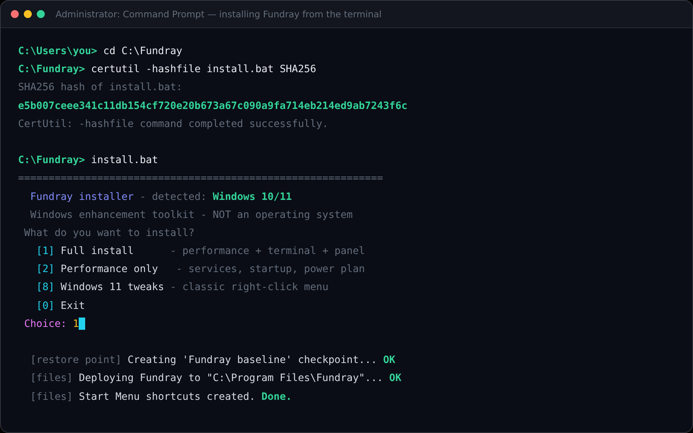

Screenshots
See it before you run it
Real interfaces shipped with the toolkit — including every step of the terminal install. Click any screenshot to view it full size.




These images show Fundray's own interfaces. The logon-background image illustrates the documented OEMBackground registry tweak; the BIOS / American Megatrends splash is firmware and cannot be captured or changed from inside Windows — Fundray gives you a BIOS-settings guide instead.